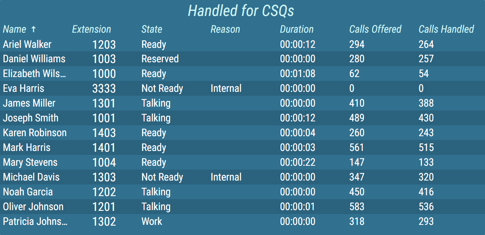
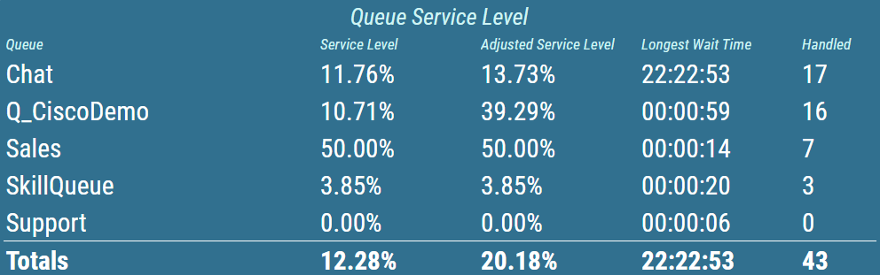
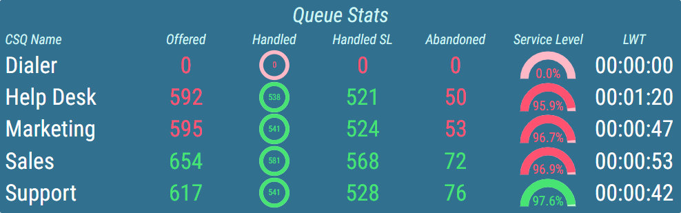
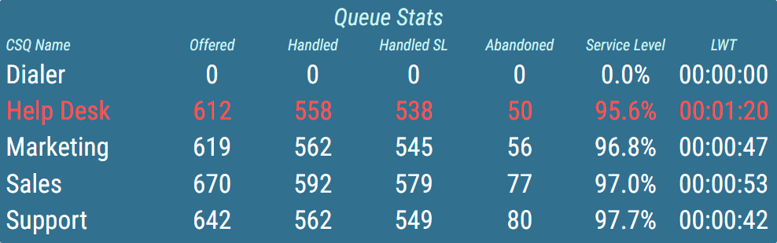
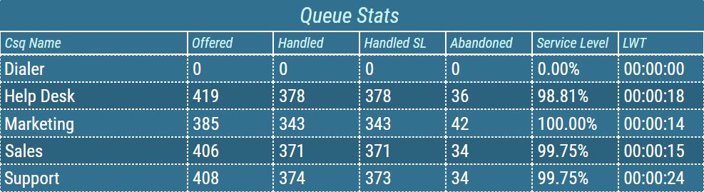
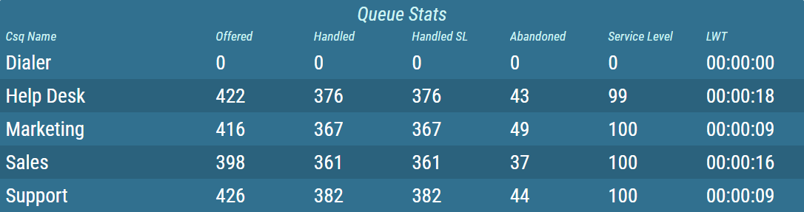

Grid¶
A Grid displays dynamically calculated data in tabular fashion. A Grid is a segment, that usually displays a larger amounts of data. To reduce the amount of space to fully display Grid’s content, the paging functionality is available. A Grid can be configured to display only a certain number of rows at once and automatically page through pages at configured interval.
Rows can be sorted by any number of columns using server side or/and client side sorting. The sorting column is marked with an arrow that indicates the direction of sorting.
Figure 1: Grid with client sorting applied
Configured client side sorting can be overriden in real-time using real-time client sorting. For more information, see Real-Time Client Sorting chapter.
A grid can also be configured to display total values for each column in the grid or just for the certain column. Colors and text style in this row can be configured independently of the others.
Figure 2: Grid with total values row
Numeric values, contained in the grid are usually displayed in the form of a simple text. Additionally multiple other, more graphical presentation types, can be chosen. For more information about presentation types, see KPI chapter.
- Alphanumeric
The value is presented as a pure text, without any additional graphical elements.
- Semaphore
The value is enveloped in a colored circle. The circle can change its color, depending on the value. For example by turning red, when the value is considered bad. The semaphore is used, when the state is more important than the value itself.
- Circle
The value is accompanied by a circle indicator. The indicator represents the level of fulfillment of a configured goal.
- Semi Circle
The value is accompanied by a semi-circle indicator. The indicator represents the level of fulfillment of a configured goal.
- Horizontal/Vertical Bar
The value is accompanied by a rectangular indicator. The indicator represents the level of fulfillment of a configured goal.
- Image
An image is applied.
- Static Color
A static color is applied.
Conditional styles can be configured for each column, that will change the color of the column values. These conditional styles can represent whether the result has met its requirements. For more information about conditional styles see Conditional Styles chapter.
Figure 3: Grid with conditional styles set
Values, that that are considered bad, can be further brought to the user’s attention by using the alerts. The following types of alerts are available:
Visual – the value blinks with configured color.
Audible – an audio alert is played.
Audible alerts are always automatically played. In case the autoplay function does not work properly, see the Media autoplay not working chapter.
Both visual and audible alerts can be configured at the same time. This allows the user to easily see the most important information, when lots of data is displayed.
In addition to column conditional styles also row conditions can be created, to highlight rows, that meet configured requirements.
Figure 4: Grid with highlighting rules
For visual separation of displayed data, borders can be configured for both headers and value area separately. User can choose between multiple styles, adjust the width of the border and set a different color for horizontal/vertical borders.
Figure 5: Grid with borders
Also, grid can be configured to alternate colors of consecutive rows.
Figure 6: Grid with alternating row colors
For more information about editing this segment, see Grid chapter.